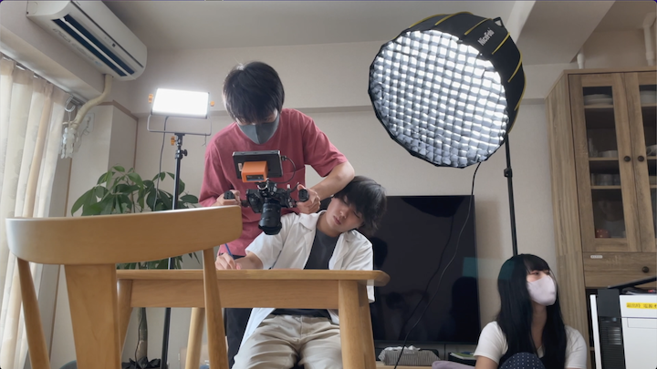

僕が映像制作をする理由
映像制作を始めたのは2019年10月。
写真から動画に世の中が変わっていく中で、自分は映像制作を始めた。
動画には、写真では残せない素晴らしいものを秘めている。
今回は、普段自分が行っている映像制作の過程を説明する。
MV制作の場合
①曲を聴いて構成を考える
クライアント様から送られてきた曲と、事前に聞いた要望と照らし合わせながら構成を考えていく。
②撮影をする
絵コンテ通りに撮影を進めていく。
